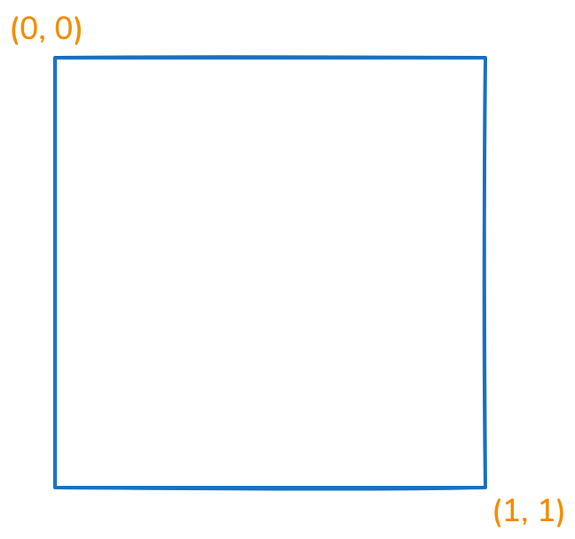

-
There are a lot of texts here that need to be revised and properly rewritten.
-
GLSL (OpenGL Shader Language).
-
Open standard (Khronos Group).
-
Works with :
-
OpenGL.
-
Vulkan.
-
WebGL.
-
-
How Vulkan uses it :
-
It's the most common shader language used for Vulkan.
-
It's human-readable, widely supported, and tools like
glslangValidatorconvert it to SPIR-V easily. -
Compiling GLSL to SPIR-V:
-
The output is a binary SPIR-V files (
vert.spv,frag.spv) fed to Vulkan at runtime.
glslangValidator -V shader.vert -o vert.spv glslangValidator -V shader.frag -o frag.spv -
-
Where I Stopped
-
Learn more about GLSL#Storage Qualifiers , etc.
Cheat Sheet
-
gl_Position-
Is always in clip space (homogeneous coordinates before perspective divide).
-
After the GPU does the perspective divide (
gl_Position.xyz / gl_Position.w), you get Normalized Device Coordinates (NDC) in the range[-1, 1]. -
The viewport transform then maps NDC into window coordinates (pixels on screen).
-
-
Model Space -> World Space -> View Space :
vec4 vertex_pos_world_space = model.model_matrix * vec4(vertex_pos, 1.0);
vec4 vertex_pos_view_space = globals.view * vertex_pos_world_space;
gl_Position = globals.proj * vertex_pos_view_space;
-
SCREEN UV :
vec2 screen_uv = gl_FragCoord.xy / vec2(viewport_size);
// Godot
vec2 screen_uv = gl_FragCoord.xy * screen_pixel_size;
vec2 viewport_resolution = vec2(1920, 1080);
vec2 screen_space_uv = gl_FragCoord.xy / viewport_resolution.xy;
-
 .
-
Vertex Light :
#ifdef LIGHT_VERTEX_USED
vec3 light_vertex = vertex;
Enums
#define GLOW_MODE_ADD 0
#define GLOW_MODE_SCREEN 1
#define GLOW_MODE_SOFTLIGHT 2
#define GLOW_MODE_REPLACE 3
#define GLOW_MODE_MIX 4
if (params.glow_mode == GLOW_MODE_ADD) {
Bitmasks
#define FLAG_USE_BCS (1 << 0)
#define FLAG_USE_GLOW (1 << 1)
#define FLAG_USE_AUTO_EXPOSURE (1 << 2)
#define FLAG_USE_COLOR_CORRECTION (1 << 3)
#define FLAG_USE_FXAA (1 << 4)
#define FLAG_USE_DEBANDING (1 << 5)
#define FLAG_CONVERT_TO_SRGB (1 << 6)
if (bool(params.flags & FLAG_USE_BCS)) {
color.rgb = apply_bcs(color.rgb, params.bcs);
}
Formats
-
every format that does not end in
_u/s norm,_u/s scaled, or_*float/intare storing non-linear colors -
reads and writes through the texture interface will have conversion to and from linear done for you
-
A raw memory access, e.g. through a buffer or a copy, does not.
-
So, if the
uniform sampler2Dis SRGB, I will read it as linear inside the shader? Also, if the color attachment is SRGB, the output will be converted from linear to srgb?-
only if you are accessing it through the texture/image interface, yes.
-
Constant Data
-
This data can be anything we want it to be, for instance it can be used for things such as calculating where an object should be placed inside our world, or computing the overall brightness of an object based on the lights in the scene.
-
The data remains constant across every shader invocation of a draw call.
-
It differs from other data (e.g. input vertex data) in this sense.
-
-
The data can be shared between shader stages, as we know it isn’t going to be changed throughout the runtime of a single draw call in a render pipeline.
-
Constant data is implemented in shader code by using global variables.
-
Global variables have the following format:
<layout> <storage> <type> <variable_name>.
layout(location = 0) in vec4 position;
layout(set = 0, binding = 0) uniform Data
{
mat4 model;
} data;
layout(location = 0) out vec4 o_pos;
Varying Types
-
The global variables that use inputs (
in) and outputs (out) are values that may vary from one shader invocation to the next, therefore they shouldn’t be used for constant data. -
They require a
layout locationwhich is used to identify a particular input/output. -
They have slightly different rules for what they do depending on the shader stage, and have slightly different restrictions on the types of data it can represent. However, generally their use is to feed values from one stage to the next (e.g. from vertex shader to fragment shader).
Uniform Types
-
Uniform types are global variables that have either the
uniformorbufferstorage type, these are uniform buffer objects and shader storage buffer objects respectively. They describe data which remains constant across an entire draw call, meaning that the values stay the same across the different shader stages and shader invocations. -
These values use a
layout bindingand, when working with multipleVkDescriptorSets, we will also give it alayout set -
Uniform buffer objects (UBOs)
-
Are the more commonly used of the two. They are read-only buffers, so trying to edit them in shader code will result in a compile-time error.
-
-
Shader storage buffer objects (SSBOs)
-
Are like special types of uniform buffer objects, denoted by the storage type
buffer. Unlike UBOs they can be written to, meaning the values can be changed in the shaders so therefore they don’t always represent data that is constant. -
Having said this, depending on the implementation, they generally can hold a lot more data as opposed to UBOs.
-
To check how much data we can store in uniform buffers and storage buffers, you can query the physical device for its
VkPhysicalDeviceLimitsand check the valuesmaxUniformBufferRangeandmaxStorageBufferRangerespectively.
-
-
Basic Syntax
Comments
//
/*
*/
Source Strings
float f\
oo;
// forms a single line equivalent to "float foo;"
// (assuming '\' is the last character before the new-line and "oo" are
// the first two characters of the next line)
Preprocessors
#
#define
#undef
#if
#ifdef
#ifndef
#else
#elif
#endif
#error
#pragma
#extension
#version
#line
defined
##
-
#if, **#ifdef,**#ifndef,#else,#elif, and#endif`.-
Operate as is standard for C++ preprocessors, except for the following:
-
Expressions following
#ifand#elifare further restricted to expressions operating on literal integer constants, plus identifiers consumed by thedefinedoperator. -
Character constants are not supported.
-
-
-
#pragma-
Allows implementation-dependent compiler control. Tokens following
#pragmaare not subject to preprocessor macro expansion. If an implementation does not recognize the tokens following#pragma, then it will ignore that pragma. -
The following pragmas are defined as part of the language.
-
The STDGL pragma is used to reserve pragmas for use by future revisions of this language. No implementation may use a pragma whose first token is STDGL .
#pragma STDGL -
Can be used to turn off optimizations as an aid in developing and debugging shaders. It can only be used outside function definitions. By default, optimization is turned on for all shaders.
#pragma optimize(on) #pragma optimize(off) -
Can be used to enable compiling and annotating a shader with debug information, so that it can be used with a debugger. It can only be used outside function definitions. By default, debug is turned off.
#pragma debug(on) #pragma debug(off) -
-
#version-
Shaders should declare the version of the language they are written to.
#version number profile_opt-
Profile arguments:
core compatibility es-
The default is core , if none is provided.
-
-
-
#error-
will cause the implementation to put a compile-time diagnostic message into the shader object’s information log (see section 7.12 “Shader, Program and Program Pipeline Queries” of the OpenGL Specification for how to access a shader object’s information log). The message will be the tokens following the
#errordirective, up to the first new-line. The implementation must treat the presence of a#errordirective as a compile-time error.
-
-
defineddefined identifier defined ( identifier )-
Two tokens in a macro can be concatenated into one token using the token pasting (
##) operator, as is standard for C++ preprocessors.
-
-
#extension-
Directives to control the behavior of the compiler with respect to extensions are declared with:
#extension extension_name : behavior #extension all : behavior-
where extension_name is the name of an extension. Extension names are not documented in this specification. The token all means the behavior applies to all extensions supported by the compiler.
-
Predefined macros
-
All macro names containing two consecutive underscores (
__) are reserved for use by underlying software layers. Defining or undefining such a name in a shader does not itself result in an error, but may result in unintended behaviors that stem from having multiple definitions of the same name.-
__LINE__-
Will substitute a decimal integer constant that is one more than the number of preceding new-lines in the current source string.
-
-
__FILE__-
Will substitute a decimal integer constant that says which source string number is currently being processed.
-
-
__VERSION__-
Will substitute a decimal integer reflecting the version number of the OpenGL Shading Language. The version of the shading language described in this document will have
__VERSION__substitute the decimal integer 460.
-
-
-
All macro names prefixed with
GL_are also reserved, and defining or undefining such a name results in a compile-time error.
Basic Types
Transparent Types
| Type | Meaning |
| ----------- | ------------------------------------------------------------------ |
|
void
| for functions that do not return a value |
|
bool
| a conditional type, taking on values of true or false |
|
int
| a signed integer |
|
uint
| an unsigned integer |
|
float
| a single-precision floating-point scalar |
|
double
| a double-precision floating-point scalar |
|
vec2
| a two-component single-precision floating-point vector |
|
vec3
| a three-component single-precision floating-point vector |
|
vec4
| a four-component single-precision floating-point vector |
|
dvec2
| a two-component double-precision floating-point vector |
|
dvec3
| a three-component double-precision floating-point vector |
|
dvec4
| a four-component double-precision floating-point vector |
|
bvec2
| a two-component Boolean vector |
|
bvec3
| a three-component Boolean vector |
|
bvec4
| a four-component Boolean vector |
|
ivec2
| a two-component signed integer vector |
|
ivec3
| a three-component signed integer vector |
|
ivec4
| a four-component signed integer vector |
|
uvec2
| a two-component unsigned integer vector |
|
uvec3
| a three-component unsigned integer vector |
|
uvec4
| a four-component unsigned integer vector |
|
mat2
| a 2 × 2 single-precision floating-point matrix |
|
mat3
| a 3 × 3 single-precision floating-point matrix |
|
mat4
| a 4 × 4 single-precision floating-point matrix |
|
mat2x2
| same as a
mat2
|
|
mat2x3
| a single-precision floating-point matrix with 2 columns and 3 rows |
|
mat2x4
| a single-precision floating-point matrix with 2 columns and 4 rows |
|
mat3x2
| a single-precision floating-point matrix with 3 columns and 2 rows |
|
mat3x3
| same as a
mat3
|
|
mat3x4
| a single-precision floating-point matrix with 3 columns and 4 rows |
|
mat4x2
| a single-precision floating-point matrix with 4 columns and 2 rows |
|
mat4x3
| a single-precision floating-point matrix with 4 columns and 3 rows |
|
mat4x4
| same as a
mat4
|
|
dmat2
| a 2 × 2 double-precision floating-point matrix |
|
dmat3
| a 3 × 3 double-precision floating-point matrix |
|
dmat4
| a 4 × 4 double-precision floating-point matrix |
|
dmat2x2
| same as a
dmat2
|
|
dmat2x3
| a double-precision floating-point matrix with 2 columns and 3 rows |
|
dmat2x4
| a double-precision floating-point matrix with 2 columns and 4 rows |
|
dmat3x2
| a double-precision floating-point matrix with 3 columns and 2 rows |
|
dmat3x3
| same as a
dmat3
|
|
dmat3x4
| a double-precision floating-point matrix with 3 columns and 4 rows |
|
dmat4x2
| a double-precision floating-point matrix with 4 columns and 2 rows |
|
dmat4x3
| a double-precision floating-point matrix with 4 columns and 3 rows |
|
dmat4x4
| same as a
dmat4
|
Floating-Point Opaque Types
| Type | Meaning |
|----------------------------------------------------------------|-----------------------------------------------------------------------|
|
sampler1D
texture1D
image1D
| a handle for accessing a 1D texture |
|
sampler1DShadow
| a handle for accessing a 1D depth texture with comparison |
|
sampler1DArray
texture1DArray
image1DArray
| a handle for accessing a 1D array texture |
|
sampler1DArrayShadow
| a handle for accessing a 1D array depth texture with comparison |
|
sampler2D
texture2D
image2D
| a handle for accessing a 2D texture |
|
sampler2DShadow
| a handle for accessing a 2D depth texture with comparison |
|
sampler2DArray
texture2DArray
image2DArray
| a handle for accessing a 2D array texture |
|
sampler2DArrayShadow
| a handle for accessing a 2D array depth texture with comparison |
|
sampler2DMS
texture2DMS
image2DMS
| a handle for accessing a 2D multisample texture |
|
sampler2DMSArray
texture2DMSArray
image2DMSArray
| a handle for accessing a 2D multisample array texture |
|
sampler2DRect
texture2DRect
image2DRect
| a handle for accessing a rectangle texture |
|
sampler2DRectShadow
| a handle for accessing a rectangle texture with comparison |
|
sampler3D
texture3D
image3D
| a handle for accessing a 3D texture |
|
samplerCube
textureCube
imageCube
| a handle for accessing a cube mapped texture |
|
samplerCubeShadow
| a handle for accessing a cube map depth texture with comparison |
|
samplerCubeArray
textureCubeArray
imageCubeArray
| a handle for accessing a cube map array texture |
|
samplerCubeArrayShadow
| a handle for accessing a cube map array depth texture with comparison |
|
samplerBuffer
textureBuffer
imageBuffer
| a handle for accessing a buffer texture |
|
subpassInput
| a handle for accessing a floating-point subpass input |
|
subpassInputMS
| a handle for accessing a multi-sampled floating-point subpass input |
Signed Integer Opaque Types
| Type | Meaning |
|-------------------------------------------------------------------|----------------------------------------------------------------|
|
isampler1D
itexture1D
iimage1D
| a handle for accessing an integer 1D texture |
|
isampler1DArray
itexture1DArray
iimage1DArray
| a handle for accessing an integer 1D array texture |
|
isampler2D
itexture2D
iimage2D
| a handle for accessing an integer 2D texture |
|
isampler2DArray
itexture2DArray
iimage2DArray
| a handle for accessing an integer 2D array texture |
|
isampler2DMS
itexture2DMS
iimage2DMS
| a handle for accessing an integer 2D multisample texture |
|
isampler2DMSArray
itexture2DMSArray
iimage2DMSArray
| a handle for accessing an integer 2D multisample array texture |
|
isampler2DRect
itexture2DRect
iimage2DRect
| a handle for accessing an integer 2D rectangle texture |
|
isampler3D
itexture3D
iimage3D
| a handle for accessing an integer 3D texture |
|
isamplerCube
itextureCube
iimageCube
| a handle for accessing an integer cube mapped texture |
|
isamplerCubeArray
itextureCubeArray
iimageCubeArray
| a handle for accessing an integer cube map array texture |
|
isamplerBuffer
itextureBuffer
iimageBuffer
| a handle for accessing an integer buffer texture |
|
isubpassInput
| a handle for accessing an integer subpass input |
|
isubpassInputMS
| a handle for accessing a multi-sampled integer subpass input |
Unsigned Integer Opaque Types
| Type | Meaning |
|-------------------------------------------------------------------|-------------------------------------------------------------------------|
|
usampler1D
utexture1D
uimage1D
| a handle for accessing an unsigned integer 1D texture |
|
usampler1DArray
utexture1DArray
uimage1DArray
| a handle for accessing an unsigned integer 1D array texture |
|
usampler2D
utexture2D
uimage2D
| a handle for accessing an unsigned integer 2D texture |
|
usampler2DArray
utexture2DArray
uimage2DArray
| a handle for accessing an unsigned integer 2D array texture |
|
usampler2DMS
utexture2DMS
uimage2DMS
| a handle for accessing an unsigned integer 2D multisample texture |
|
usampler2DMSArray
utexture2DMSArray
uimage2DMSArray
| a handle for accessing an unsigned integer 2D multisample array texture |
|
usampler2DRect
utexture2DRect
uimage2DRect
| a handle for accessing an unsigned integer rectangle texture |
|
usampler3D
utexture3D
uimage3D
| a handle for accessing an unsigned integer 3D texture |
|
usamplerCube
utextureCube
uimageCube
| a handle for accessing an unsigned integer cube mapped texture |
|
usamplerCubeArray
utextureCubeArray
uimageCubeArray
| a handle for accessing an unsigned integer cube map array texture |
|
usamplerBuffer
utextureBuffer
uimageBuffer
| a handle for accessing an unsigned integer buffer texture |
|
atomic_uint
| a handle for accessing an unsigned integer atomic counter |
|
usubpassInput
| a handle for accessing an unsigned-integer subpass input |
|
usubpassInputMS
| a handle for accessing a multi-sampled unsigned-integer subpass input |
Sampler Opaque Types
| Type | Meaning |
|-------------------|---------------------------------------------------------------------------------------|
|
sampler
| a handle for accessing state describing how to sample a texture |
|
samplerShadow
| a handle for accessing state describing how to sample a depth texture with comparison |
Pointers
-
There are no pointer types.
Integers
-
For OpenGL:
-
unsigned integers have exactly 32 bits of precision.
-
signed integers use 32 bits, including a sign bit, in two’s complement form.
-
-
For Vulkan:
-
mediump and lowp integers are as defined by the SPIR-V RelaxedPrecision decoration.
-
highp unsigned integers have exactly 32 bits of precision.
-
highp signed integers use 32 bits, including a sign bit, in two’s complement form.
-
Floats
float a, b = 1.5; // single-precision floating-point
double c, d = 2.0LF; // double-precision floating-point
-
When the suffix
lforLFis present, the literal has typedouble. Otherwise, the literal has typefloat. -
A decimal point (
.) is not needed if the exponent part is present.
Vectors
vec2 texcoord1, texcoord2;
vec3 position;
vec4 myRGBA;
ivec2 textureLookup;
bvec3 less;
Matrices
-
Matrix types beginning with "
mat" have single-precision components while matrix types beginning with "dmat" have double-precision components. -
The first number in the type is the number of columns , the second is the number of rows .
-
If there is only one number, the matrix is square.
mat2 mat2D;
mat3 optMatrix;
mat4 view, projection;
mat4x4 view; // an alternate way of declaring a mat4
mat3x2 m; // a matrix with 3 columns and 2 rows
dmat4 highPrecisionMVP;
dmat2x4 dm;
Atomic Counters
-
OpenGL:
-
Atomic counter types (e.g. atomic_uint ) are opaque handles to counters, declared and behaving as described above for opaque types. The variables they declare specify which counter to access when using the built-in atomic counter functions as described in “ Atomic Counter Functions ”. They are bound to buffers as described in “ Atomic Counter Layout Qualifiers ”.
-
Members of structures cannot be declared as atomic counter types.
-
-
Vulkan:
-
Atomic counter types are not available when targeting Vulkan.
-
Arrays
float frequencies[3];
uniform vec4 lightPosition[4u];
light lights[]; // Unsized. Valid in GLSL, illegal in ESSL.
const int numLights = 2;
light lights[numLights];
vec4 a[3][2];
// a shader storage block, introduced in section 4.3.7 "Buffer Variables"
buffer b {
float u[]; // an error, unless u gets statically sized by link time
vec4 v[]; // okay, v will be sized dynamically, if not statically
} name[3]; // when the block is arrayed, all u will be the same size, but not necessarily all v, if sized dynamically
-
Arrays only have a single dimension (a single number within “[ ]”), however, arrays of arrays can be declared.
-
Any type can be formed into an array.
-
All arrays are inherently homogeneous; made of elements all having the same type and size, with one exception. An array of shader storage blocks whose last member is a runtime-sized array allows the individual blocks to have different sizes and hence a different number of elements in the trailing array.
-
Explicitly Sized
-
The number of elements in the array is explicitly given.
-
It is a compile-time error if:
-
an explicitly sized array is indexed with a constant expression greater than or equal to the declared size.
-
-
-
Runtime Sized
-
The number of elements is not given and the array is the outermost dimension of the last declared member of a shader storage block (see section “ Interface Blocks ”). The array size is inferred at run-time from the size of the data store backing the shader storage block.
-
It is a compile-time error if:
-
a runtime array is passed as a function argument.
-
-
-
Unsized
-
The number of array elements is not given and the array is not runtime sized.
-
Unsized arrays may become explicitly sized following either an explicitly-sized initializer or a redeclaration with an explicit size (Explicitly-sized and runtime-sized arrays may not be redeclared). It is a compile-time error to redeclare an array with a different underlying member type.
-
It is a compile-time error if:
-
an unsized array is indexed with anything other than a constant integral expression.
-
an unsized array is declared as a formal parameter to a function.
-
an unsized array is declared as the return type of a function.
-
an unsized array is passed as a function argument.
-
an unsized array is redeclared with a size less than or equal to any constant index used earlier in the shader to index the array.
-
-
-
Undefined behavior results from indexing an array with a non-constant expression that’s greater than or equal to the array’s size or less than 0.
-
It is a compile-time error to assign either to or from a runtime-sized or unsized array (rather than specific elements). Note, this is a rare case that initializers and assignments appear to have different semantics. An initializer for an unsized array is valid and will size the array, but the equivalent assigment is not valid. For example,
float a[5];
float b[];
// An initializer sizes an array ...
float c[] = a; // c is explicitly size 5
// ... but the equivalent assignment is not valid
float d[];
d = a; // Error. Assignment to an unsized array
// It is never valid to assign from an unsized array
float e[] = b; // Error. b is unsized so cannot be assigned
-
Alternatively, the initializer-list syntax can be used to initialize an array of arrays:
vec4 a[3][2] = { vec4[2](vec4(0.0), vec4(1.0)),
vec4[2](vec4(0.0), vec4(1.0)),
vec4[2](vec4(0.0), vec4(1.0)) };
-
For arrays of arrays, any unsized dimension is explicitly sized by the initializer:
vec4 a[][] = { vec4[2](vec4(0.0), vec4(1.0)), // okay, size to a[3][2]
vec4[2](vec4(0.0), vec4(1.0)),
vec4[2](vec4(0.0), vec4(1.0)) };
Array Type
-
An array type can be formed by specifying a non-array type
float[5] // an array of size [5] of float
float[2][3] // an array of size [2] of array of size [3] of float,
// not size [3] of float[2]
-
Such an array type can be used anywhere any other type can be used, including as the return value from a function, as a constructor of an array and in declarations.
// As a function return type
float[5] foo() { }
// As an array constructor
float[5](3.4, 4.2, 5.0, 5.2, 1.1)
// In declaring an unnamed parameter
void foo(float[5])
// In normal declarations
float[5] a;
// The following 3 declarations are equivalent:
vec4 a[3][2]; // size-3 array of size-2 array of vec4
vec4[2] a[3];
vec4[3][2] a;
-
If such an array type is unsized and used as a constructor then the size of the array is inferred from the constructor arguments. For example,
float a[5] = float[5](3.4, 4.2, 5.0, 5.2, 1.1);
float a[5] = float[](3.4, 4.2, 5.0, 5.2, 1.1); // Constructor also of type float[5]
Length Method
-
The return value has type
int.
float a[5];
a.length(); // returns 5
vec4 a[3][2];
a.length() // returns 3
a[x].length() // returns 2
-
It is a compile-time error to use the
length()method on an unsized array. The return value is a constant expression if and only if the array is explicitly-sized.
Structs
struct light {
float intensity;
vec3 position;
} lightVar;
-
In this example,
lightbecomes the name of the new type, andlightVarbecomes a variable of typelight. -
To declare variables of the new type, use its name (without the keyword
struct).
light lightVar2;
-
Comptime errors:
struct S { float f; }; // Allowed: S is defined as a structure.
struct T {
S; // Error: anonymous structures disallowed
struct { ... }; // Error: embedded structures disallowed
S s; // Allowed: nested structure with a name.
};
Functions
-
Functions that do not return a value must be declared as
void.-
There is no default function return type.
-
The keyword
voidcannot be used in any other declarations (except for empty formal or actual parameter lists), or a compile-time error results.
-